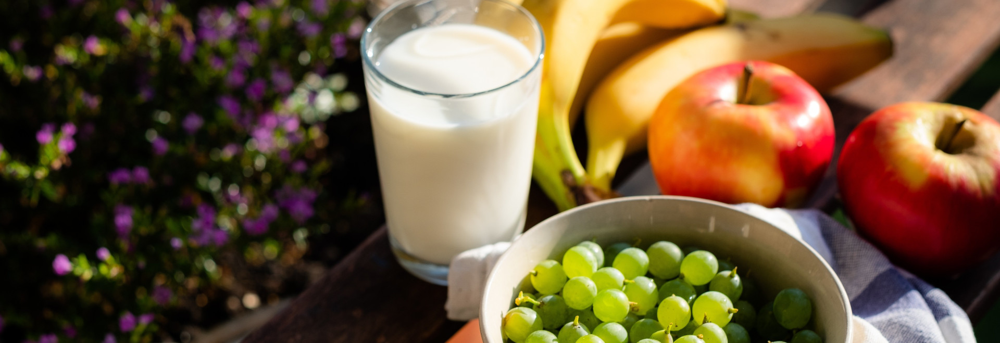
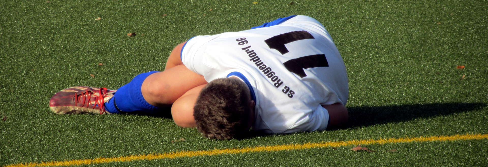

Trainings- und Ernährungstipps
Fußball ist eine anspruchsvolle Sportart, die nicht nur technisches Geschick, sondern auch körperliche Fitness erfordert. Besonders für Nachwuchsfußballer ...
Mehr zu Trainings- und ErnährungstippsHier findest du alles, was du brauchst, um auf und neben dem Platz dein volles Potenzial auszuschöpfen. Mit wertvollen Einblicken und praktischen Tipps erfährst du alles, was wichtig und entscheidend ist.

Fußball ist eine anspruchsvolle Sportart, die nicht nur technisches Geschick, sondern auch körperliche Fitness erfordert. Besonders für Nachwuchsfußballer ...
Mehr zu Trainings- und Ernährungstipps
Fußball ist eine der beliebtesten Sportarten weltweit und viele Kinder und Jugendliche träumen davon, ein professioneller Fußballer zu werden. Doch der Weg dorthin ...
Mehr zur VerletzungspräventionDie mentale Vorbereitung ist für den Erfolg im Fußball genauso wichtig wie das körperliche Training. Nachwuchsfußballer stehen oft unter besonderem Druck, sowohl von sich selbst als auch von Außen. Um bei Spielen ...
Mehr zur mentalen VorbereitungFür Nachwuchsfußballer ist nicht nur das Training und das Spiel entscheidend für ihre Entwicklung, sondern auch die Erholung. Eine gute Regeneration hilft, ...
Mehr zur Regeneration